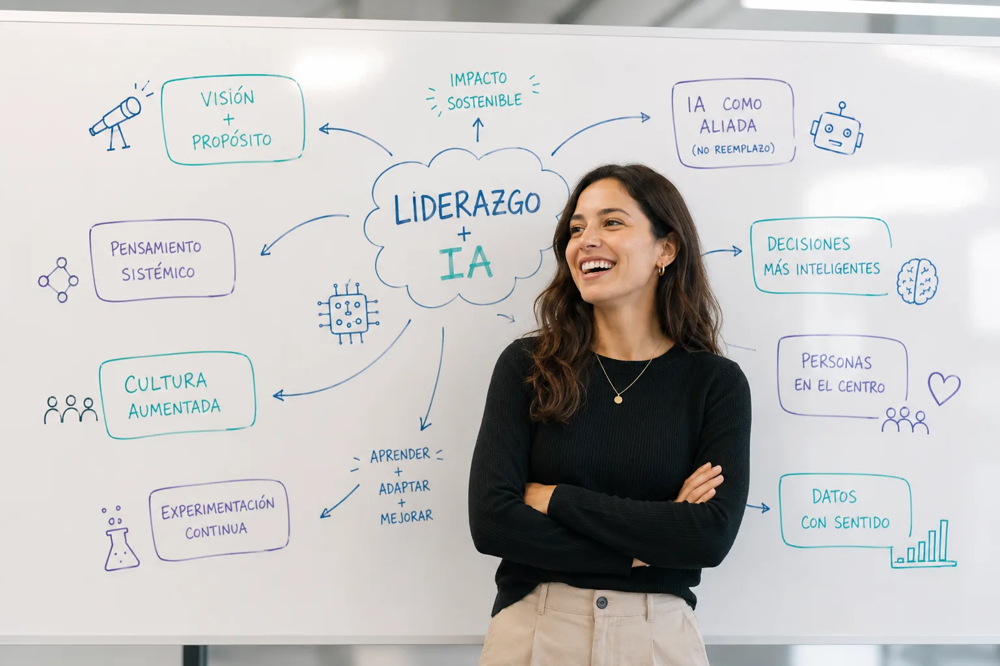
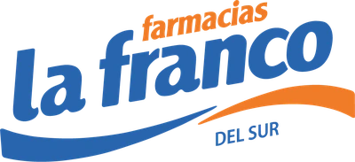
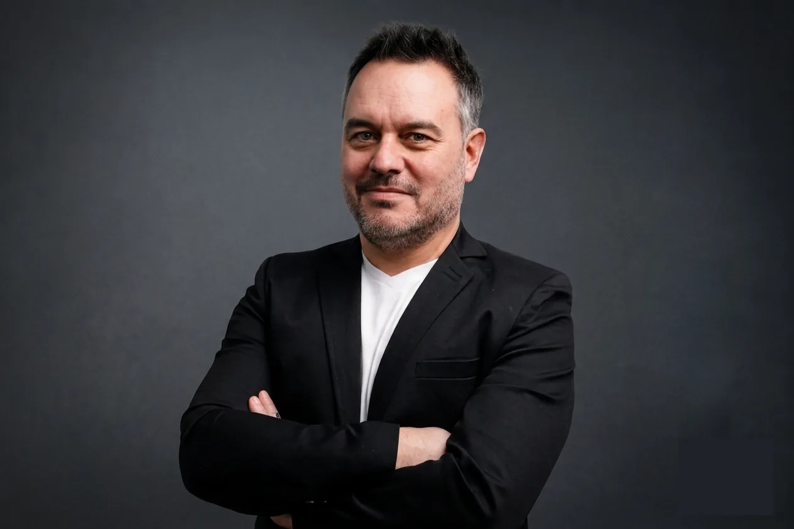

Workshop ejecutivo
Líderes
Aumentados
La IA no reemplaza líderes. Los amplifica.
Cuatro horas de entrenamiento ejecutivo presencial. Decidir con más claridad, conducir equipos en contextos de cambio e integrar la IA como ventaja estratégica real.
Cupos limitados · Para quienes liderarán en contextos cambiantes.

Con el apoyo de

El contexto que ningún líder puede ignorar
La IA ya llegó.
El desafío ahora es liderar con ella.
de los líderes integrará la IA en sus decisiones estratégicas antes de fin de 2026. La IA dejó de ser táctica.
Harvard Business Impact · 2026 Global Leadership Studyde los CEOs confirma: el éxito de la IA depende de las personas, no de la tecnología.
IBM Institute for Business Valuede las empresas prevé que al menos 1 de cada 10 puestos estará totalmente automatizado en apenas un año. Los roles deben rediseñarse ahora.
Deloitte · 2026 AI ReportLa IA no va a transformar organizaciones por sí sola.
Lo harán los líderes capaces de integrarla en su forma de pensar, decidir y gestionar.
Porque el futuro no pertenece a quienes tienen mejores herramientas, sino a
quienes saben utilizarlas mejor.
El enfoque
El futuro del liderazgo no es humano ni artificial. Es aumentado.
La tecnología sola no transforma organizaciones. La transformación ocurre cuando líderes preparados usan la IA para pensar mejor, ordenar equipos y crear valor, con el criterio humano siempre al mando.
Qué desarrollás en 4 horas
Tres capacidades para liderar la nueva era
Decidir con criterio
Marcos claros para transformar información en decisiones, con la IA como copiloto y el juicio humano al mando.
Conducir equipos
Comunicación, feedback y conducción para alinear equipos en contextos de cambio, presión e incertidumbre.
Innovar procesos
Rediseñar cómo se trabaja con IA aplicada, con trazabilidad y ética en cada paso.
El programa
Cuatro horas de entrenamiento aplicado
Metodología activa, casos reales y uso guiado de IA. Cada bloque, una capacidad concreta para volver al trabajo y aplicar de inmediato.
BLOQUE 01
Nuevo liderazgo en la era de la IA
Panorama de la transformación: qué está cambiando en las organizaciones que ya integran IA, qué roles están evolucionando y cuál es el nuevo estándar del liderazgo efectivo. Marco de referencia para el resto del workshop.
BLOQUE 02
Decisiones ágiles con criterio
Frameworks para tomar decisiones complejas con información incompleta. Uso de IA como copiloto para analizar escenarios, anticipar consecuencias y estructurar el razonamiento.
BLOQUE 03
Productividad y procesos aumentados
Mapeo de procesos susceptibles de optimización con IA. Criterios de implementación que respetan la ética y la cultura organizacional, y cómo introducir IA sin resistencia.
BLOQUE 04
Conducción de equipos en el cambio
Cómo liderar personas en contextos de transformación tecnológica. Gestión del miedo, la resistencia y la incertidumbre. Comunicación que construye confianza mientras el equipo cambia.
BLOQUE 05
IA responsable y confianza institucional
Ética de la IA para líderes: qué preguntas hacerse antes de implementar, cómo comunicar el uso de IA a equipos y stakeholders, y cómo construir una cultura de innovación responsable que genere confianza institucional sostenible.
Los facilitadores
Quiénes conducen el workshop
Un especialista en procesos y un coach de líderes, trabajando juntos para una transformación real.
Andriy Trofymenko
Ingeniero Industrial · Procesos · Gestión
Especialista en gestión de proyectos y optimización de procesos, con foco en planificación estratégica, control y liderazgo de equipos.
Posgrado universitario de la Universidad Nacional de San Martín en Industria 4.0 y Tecnologías Habilitadoras, con la Inteligencia Artificial como eje.
Integra procesos, personas e IA para transformar la toma de decisiones en resultados medibles, con experiencia en organizaciones públicas y privadas.

Christian Pollavini
Coach de Líderes · Equipos · Gestión
Especialista en liderazgo y coaching ejecutivo, con foco en elevar las capacidades de conducción, desarrollar talento y acelerar el desempeño.
Consultor certificado en Performance Comercial y Customer Experience – Modelo Disney LATAM.
Impulsa líderes capaces de convertir criterio, personas e IA en una ventaja concreta para decidir mejor, adaptarse más rápido y generar resultados sostenibles. Fundador de CP Coaching & Training.
¿Este workshop es para vos?
Para quienes quieren liderar la transformación, no seguirla.
Un espacio para perfiles con equipos a cargo y con ambición de liderazgo, que quieren llevar su gestión al siguiente nivel con inteligencia artificial, en organizaciones públicas y privadas.
Quiero reservar mi lugarPreguntas frecuentes
Todo lo que necesitás saber antes de inscribirte.
¿Necesito tener conocimientos previos de IA?
No. El workshop está pensado para personas con distintos niveles de experiencia.
¿Necesito llevar laptop?
No es obligatorio, aunque puede ser útil para experimentar con algunas herramientas durante el workshop.
¿Se entrega certificado?
Sí. Se entrega un certificado digital de participación.
¿Qué pasa si no puedo asistir?
Si avisás con al menos 48 horas de anticipación, podés transferir tu inscripción a otra persona o solicitar la devolución del importe abonado.
¿Cómo se abona la inscripción?
Luego de completar el formulario, nos contactaremos con vos para enviarte los datos bancarios y realizar el pago.
¿Cuántos cupos hay?
Los cupos son limitados para garantizar una experiencia de trabajo cercana y participativa.
¿Tenés alguna otra consulta?
Escribinos por WhatsApp y te respondemos a la brevedad.
Inscripción
Sumate a la primera generación de líderes aumentados.
Cupos limitados. Dejanos tus datos y te contactamos para confirmar tu lugar en el workshop.
- Sábado 5 de septiembre · 10:00–14:00 hs · Presencial
- Auditorio del CCIARG · 9 de Julio 32 · Río Gallegos
Auditorio del CCIARG · 9 de Julio 32 · Río Gallegos